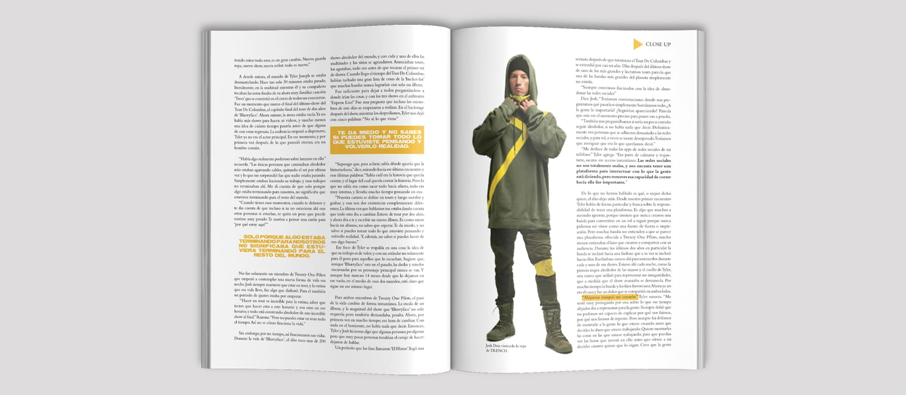

PRESS PLAY
ABOUT : PRESS PLAY est un magazine de musique alternative. Son target principal sont les jeunes qui aiment la musique et s’informer sur ce monde.
MISSION : Créer un logo qui puisse représenter le concept du magazine. Aussi créer l’intérieur du magazine, en suivant une certaine esthétique.
SOLUTION : Un jeu de mots avec l’anglais permet de créer le logo en remplaçant le A par un bouton de play. Cela permet de représenter que lorsque on ouvre le magazine c’est comme si on met play à la musique.

